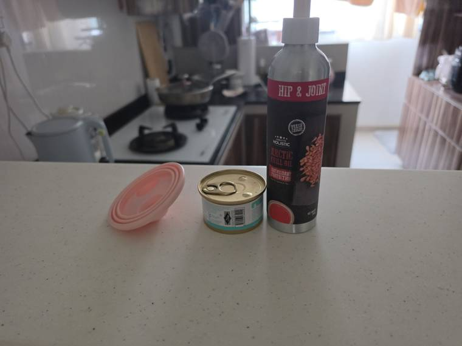
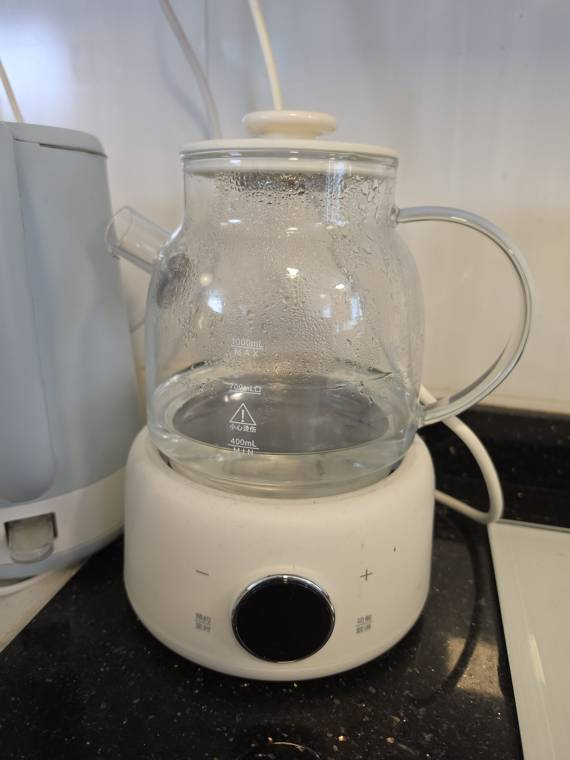
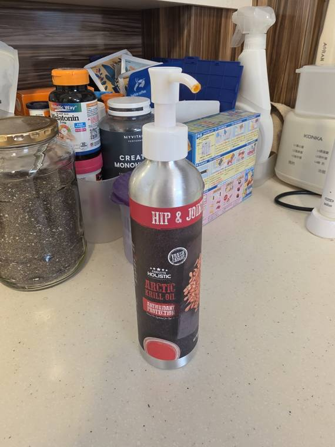
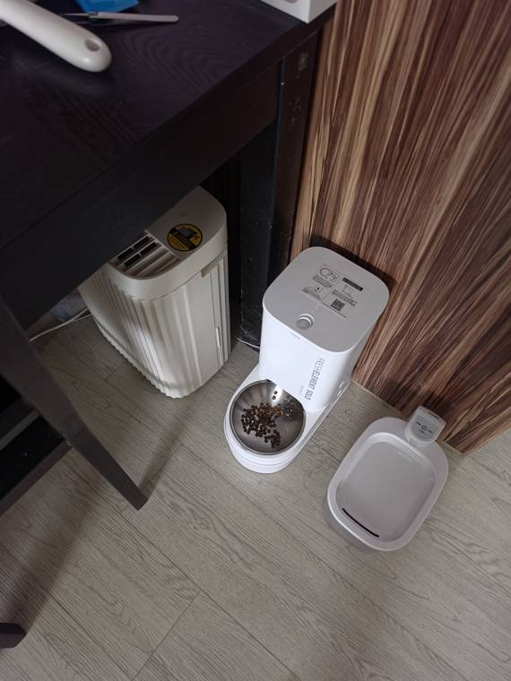
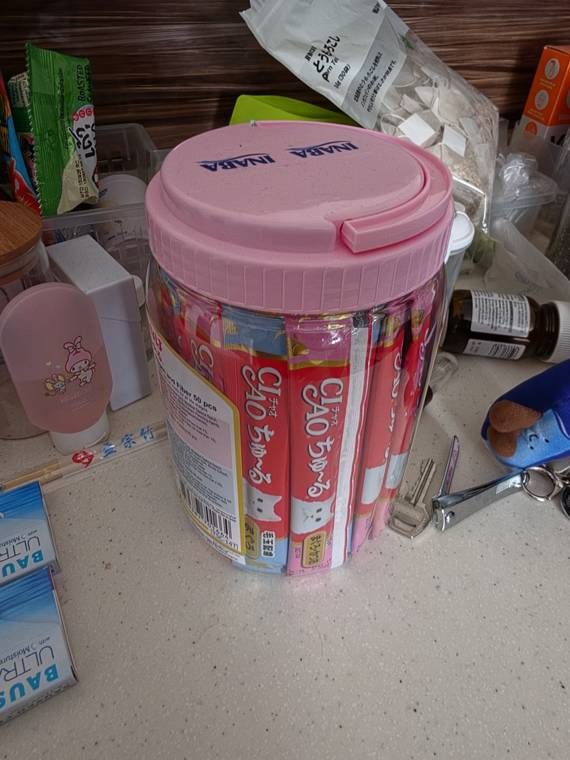
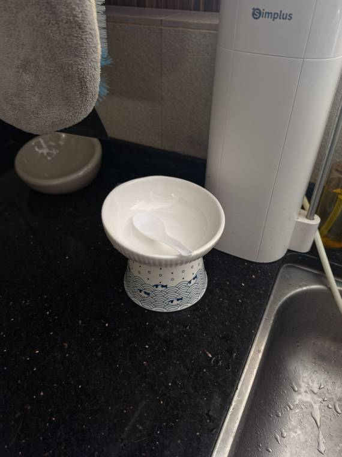
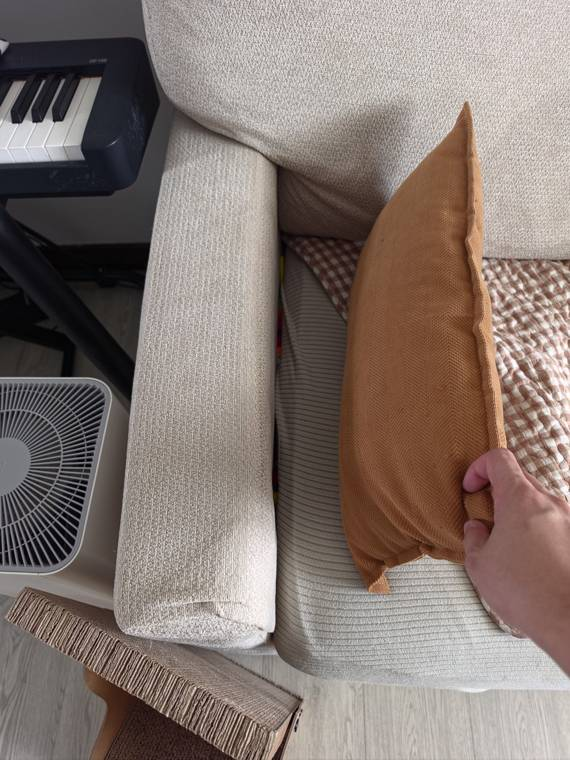
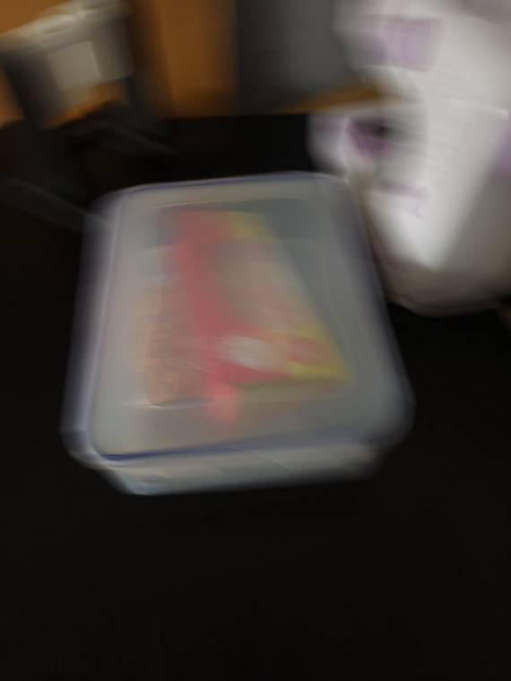

Bagel's Sitter Guideeverything you need for a happy visit
Hello, lovely cat sitter! Thank you for looking after our girl. This page walks you through a visit from the moment you open the door to the moment you leave. Tick off the checklist as you go.
- Name: Bagel
- Silver tabby
- Girl
- Shy with new people
- Hides sometimes (normal!)

Watch the front door
Bagel likes to nap on the mat right inside the front door. She doesn't usually try to run out, but we don't know how she'll act with someone new.
- Coming in: open the door slowly and block the gap with your legs.
- Saying hello: don't walk straight up to her. Come in low and sit down on the floor. She's much less scared of people at her level, so let her come to you.
- Leaving: check where she is before you open the door.
Visit checklist
tap each step when it's doneMeal prep
wet food, krill oil and water- Check the fridge first. Look for an opened can with the pink silicone lid on it. If there is one, use that. If not, open a new can: go for Kit Cat Tuna & Chicken Hearts, it's her favourite.
- Heat the water. On the glass kettle, press the lower right button (labelled 功能 / 取消) twice to start heating.
- Scoop the food. Use the white plastic spoon (kept in her bowl by the sink) to scoop ⅓ of the can into the bowl.
- Add krill oil. Press the pump bottle down halfway for ½ pump onto the food.
- Mix in the water. Pour some in and stir until the food is a thick, liquidy consistency, like a thick soup.
- Fresh can
- Use warm water, about 40°C. It should feel warm, not hot.
- Can from the fridge
- Use hot water to take the chill off the food.
- Cover the can. Put the pink silicone lid over the opened can and put it back in the fridge.



Serving
her dining corner

Put the bowl on the floor to the left of the white automatic feeder. That's where Bagel expects her wet food.
She might not eat it straight away, and that's okay. Leave the bowl out. It gets washed at the next visit.
- Automatic feeder
- Petkit Fresh Element Solo. It gives her dry kibble by itself.
- Water fountain
- The white water bowl to the right of the feeder. Check every visit that it has water and still has battery. If the battery is low, let us know in the group chat.
- Churu treats
- Inaba Ciao Churu tubes, in the clear tub with the pink lid on the kitchen counter.
Litter box
every visit- Find it in the toilet at the back of the home.
- Scoop out any clumps and poop.
- Flush it down the toilet. We use flushable litter, so it's safe.
- Close the toilet lid afterwards.
Clean up
quick and easyWash her bowl and put it back on the counter next to the kitchen sink, with the white spoon resting inside.
If she hasn't finished, leave the bowl out and wash it at the start of your next visit. On your last day, just leave it; we'll clean it when we're back.

Playtime
optional, 10 to 15 minutes

We have two wand toys, tucked into the gap between the sofa cushion and the left armrest. Slide them back in when you're done.
Bagel can be shy with new people, so if she isn't in the mood, that's completely fine. No pressure!
Catch her eye
Wiggle the wand quickly to get her attention.
Hide and seek
Once she's watching, move the toy behind the left or right side of the sofa. She usually chases when it disappears.
Tail tickle
Lightly touch the toy to her lower back or tail. She'll chase it or flop down and bite it.
If something's wrong
message us in the group chatMessage us right away
- Vomiting
- Diarrhoea
- Anything that worries you
Totally normal
- Hiding when you visit
- Not eating her wet food straight away
- Not wanting to play with you
Meet Bagel
so you know who you're looking for